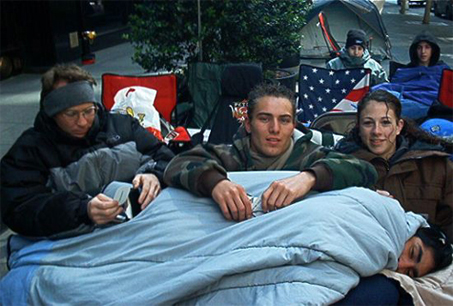

I think that we all would consider ourselves fans of the Star Wars. But my question to you is, what is a fan? Webster's dictionary defines a fan as "1 : any of various devices for winnowing grain". Well if there's any one person who best fits that description, it might have to be Tom Minter, aka Tom_Tom Binks. You might remember him from such lines as the 1999 line for Episode I, and the 2002 line for Episode II. You also might remember him as being British, having come over from Britland for both events, bringing with him a youthful vim, vigor, and the knowledge that if someone attempted to challenge him at Star Wars Trivial Pursuit they were going to end up deep fried.
Tom Tom had a blast with us, and he recently wrote in to Star Wars magazine (the UK's answer to the Insider) retransmitting this message to all of our steak and kidney pie-eating counterparts. And it's really quite a good show, if you can get past all the extra U's and the fact that they call us a "queue".
Hehhehe, the NYQueue. It's even funnier when you're really tired.
You want to see the article, don't you? Well I can do that for you. That's...why I'm here. So check it out by clicking here: 15 Minutes of Fame!
And for those of us who are nearsighted scrap-piles, here's the picture featured in the article. Or at least it's close enough that you shouldn't notice the difference, much like how you shouldn't notice that it isn't Sam Jackson coming down that ramp onto Naboo at the end of TPM.
Thanks to JediSamantha for that pic.
Anyways, while I'm here, and while I'm reminiscing...crimeny it's been more than 6 months since begun the clone war had. It seems like it was just yesterday we were watching the Holiday Special together on the pavement, and here we are on Life Day itself. Well, on behalf of all of the NYLine staff, have a great weekend! I hope I wasn't the only one watching Episode I on TV despite the fact that I had the DVD sitting next to me. I mean I know I'm a dork, but you know that geekery does love company.
Happy Thanksgiving everyone!!